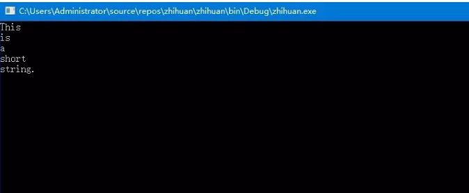
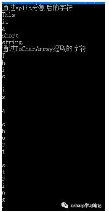

Split是string中非常有趣的命令，它是用来分隔字符串中子字符串的字符数组，并且不包含分隔符的空数组或null,如下面的代码：
String value = "This is a short string.";
Char delimiter = ' ';
String[] substrings = value.Split(delimiter);
foreach (var substring in substrings)
Console.WriteLine(substring);
Console.ReadKey();
它把字符串value以空格为分隔符，分割了含有4个字符串的数组，并显示在控制台上，分割后的字符串两端都没有空格（即空格被自动删除）。其运行界面如下：

但是split命令与TocharArray命令不同，TocharArray命令是提取的是字符串的字符组，每个字符存放在数组元素中，我们可以通过如下实例来看一下
String value = "This is a short string.";
Char delimiter = ' ';
String[] substrings = value.Split(delimiter);
char[] stringchars = value.ToCharArray();
Console.WriteLine($"通过split分割后的字符");
foreach (var substring in substrings)
Console.WriteLine(substring);
Console.WriteLine($"通过ToCharArray提取的字符");
foreach (var stringchar in stringchars)
Console.WriteLine(stringchar);
Console.ReadKey();
本示例中substrings是通过split分割的字符串数组，stringchars是通过tochararray提取的字符数组，通过处理后substrings[0]='This',stringchars[0]='T',其运行界面如下：
